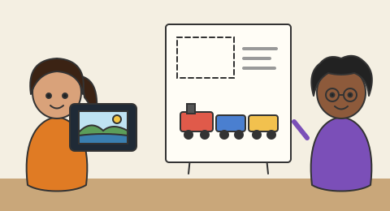

Who does the picture belong to?
Learn with an AI tutor
An AI tutor explains this page to you and helps you with the exercises. Choose your assistant:
Open with Claude Open with ChatGPT Open with Mistral Vibe
You use your own account with the provider. The assistant is not offered by lernapps.net: lernapps only provides the content and the exercises. The choice holds for all pages, on this device only.
Case 1: A photo from the internet

© CC-BY-4.0- A photo from a picture search
- B Mia's drawing
Selin on the left, Mia on the right, and in the middle their poster for the class trip to the Seeberg.
Class 6b is going on a trip to the Seeberg, a hill by a lake (“See” means lake, “Berg” means hill). Tom, Lea, Ben and Ali are in class 6b too. Selin and Mia are making a poster about the trip. Mia has painted a train. Selin finds a nice photo of the lake with a picture search. One click, and it is on her tablet. Selin and Mia are in a case: a situation where you have to decide what is okay.
On this page you learn who a picture belongs to and what copyright protects.
Exercise
Solution
the person who took it right answer
Whoever took the photo created it, even when it is on the internet.
Selin, because it is on her tablet now
Selin has only loaded a copy. She did not take the photo.
everyone, because it is on the internet
On the internet anyone can see the photo. But that does not make it belong to everyone.
A photo belongs to the person who took it. Loading or looking at it does not change that.
Work, creator, copyright
- work
Something a person has made themselves, with their own ideas. For example a text, a song, a picture, a photo, a film or a computer program.
- creator
The person who made a work.
- copyright
The creator's right over her work. She decides who may copy it, pass it on, show it in public or put it online.
| Work | Kind | Creator |
|---|---|---|
| the photo of the lake | photo | the photographer |
| the painted train | picture | Mia |
| the song “Seeberg Blues” | music | Tom |
Remember
You are a creator too when you paint, write or compose something yourself. Your age does not matter.
What is on the internet still belongs to someone. You may look at it. For more, you usually need the creator's permission. There is an exception for lessons; more on the next page.
Practice
Exercise
Solution
Right answer: an essay by Lea about Lea's cat – Lea; a photo that Ben took of Ali – Ben; a game that two programmers wrote – the two programmers
The creator is whoever made the work. Someone who can be seen in a photo did not take the photo.
Exercise
Solution
Tom's song “Seeberg Blues” right answer
Tom made the song with Tom's own ideas. It is a work of music.
a computer program for a game app right answer
A program is a work too. The people who wrote it are its creators.
the fact that the class trip starts on Monday
Nobody made a fact with their own ideas. It is not a work.
the Seeberg itself
The mountain is nature. But a photo of the mountain is protected.
A person made a work with their own ideas, for example a song or a program. Facts and nature are not works.
Exercise
Solution
Right answer: 3
Mia decides all three things: copying, putting online and selling.
Exercise
Solution
Mia has not allowed it and is not named. right answer
Mia is the creator. She decides about her picture, and it is her work, not Ben's.
Nothing, because Ben does not sell it.
Even without a sale, Mia decides who copies and shows her picture.
Nothing, because children are not creators.
Children are creators too. Age does not matter.
Whoever copies someone else's work and shows it as their own goes against the creator's right. Ben would have to ask Mia and name Mia.
So the photo of the lake does not belong to Selin. The picture search shows Selin two more photos of the lake. May she use one of them for the poster? You find out on the next page.
Found a mistake or have an idea for this app?